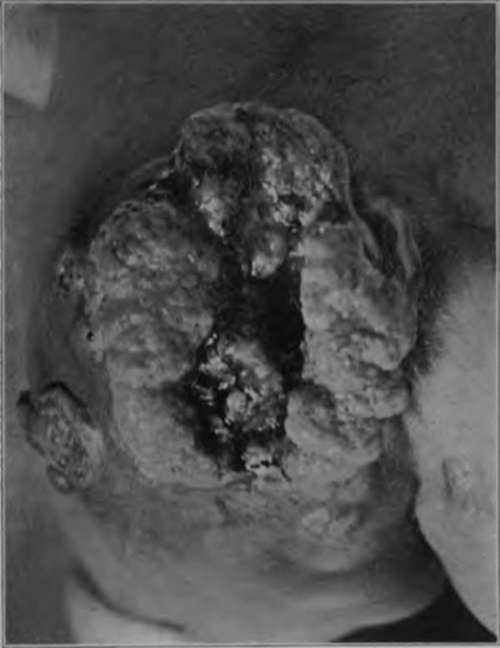
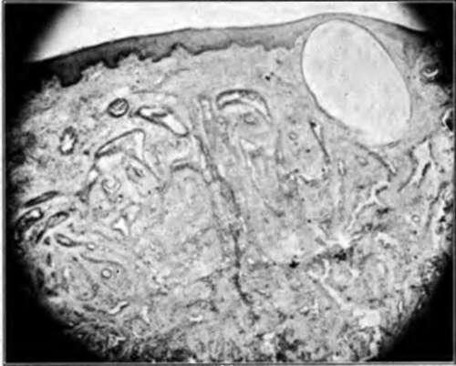

Tumors Of The Sweat Glands
Description
This section is from the book "Skin Cancer", by Henry H. Hazen, A.B., M.D.. Also available from Amazon: Skin Cancer.
Tumors Of The Sweat Glands
Here, again, there are several possibilities: First, simple hypertrophy of the sweat glands: second, true adenoma of the sweat glands; third, basal-celled carcinoma of the sweat glands; and fourth, more malignant carcinoma, springing from the lining cells of the sweat glands.
Simple Hypertrophy of the Sweat Glands,-Simple hypertrophy of the sweat glands docs not form tumors, so far as is now recognized.
True Adenoma Of Sweat Glands
Uana states that definite adenomata of the coil glands are very rare, and that most tumors usually supposed to consist of these elements are in reality derived from the sweat ducts. As a criterion, it is necessary to show that lateral growths spring from the glands, these growths tending to bend and roll up; the presence or absence of a lumen is of no particular moment, but the basal membrane must be intact. The true cases of spiradenoma fall into two groups, according to whether they form true independent tumors, or are simply accompaniments of other dermatoses. The former are rare, the latter fairly common. The latter type is most frequently encountered in association with carcinomata and angiomata, also in lupus and neurofibromata, as well as varices of the leg.
Fig. 37.-This carcinoma of the buttock arose about one year ago, and is now practically inoperable, owing to a mass of glands in the groin. Histological examination showed that the neoplasm still retained the structure of the sebaceous glands, from which it arose. This proves that an adenocarcinoma of the skin may metastasize rapidly, and that the glands should be taken out at the earliest possible moment. (Author's collection).
Unna has collected six cases which he accepts as true spiradeno-mata-the cases reported by Lotzbeck, Thierfelder, Knauss, Chande-lux, the Haggans, and one of his own. Most of these tumors arose as subcutaneous nodules, which grew either slowly or rapidly, but which were always encapsulated. Usually there was considerable accompanying vascular dilatation. Unna's review of these cases is very complete.
Adenocarcinoma Of Sweat Glands
Carcinomata of the sweat glands are comparatively rare tumors, and must usually be derived from the basal cells, for they are of comparatively slow growth. They arise as nodules beneath the skin, which gradually become adherent to the surrounding tissues and eventually ulcerate. Bloodgood has seen but two cases. His second case is described as follows:6 "It was observed in a colored woman aged 50 years. Two years ago attention was called to the back by itching; the patient felt a small nodule in the back, about the size of a bean, since which time there has been a steady growth, and the patient has abraded the surface by constant scratching. . . . The central ulceration is very superficial, like an abrasion, and covered with a brownish crust. This ulceration occupied the center of an oval, with a slightly elevated area of induration not sharply outlined from the surrounding tissue. Clinically, it appeared like a diffuse fibroma of the skin, which is not an uncommon observation, especially in the colored race. ... On section between the superficial ulcerated area and the surrounding zone of epidermis, one could see nothing but a diffuse growth of fibrous tissue. Epithelial alveoli could not be distinguished with the naked eye; yet, when studied microscopically, this fibrous stroma was riddled with minute areas lined or filled by sweat gland epithelium, and in many places the long tubules of the sweat glands were preserved.,, With all due deference to the great authority of Bloodgood, the author feels that this tumor is an example of an adenoma of the sweat ducts, rather than a carcinoma of the glands. In a recent article Wolfheim* states that there are but two certain cases of this disease on record-a case of Darier's and one of his own. Wolfheim contends that the following criteria are necessary in order to establish beyond all doubt this diagnosis: first, either a sure connection with the ducts or coil glands; second, a morphology which can be identified without any doubt as normal or abnormal sweat glands; and third, the condition of the elastic tissue must be investigated, because its characteristic arrangement around the tumor mass indicates whether we have to do with sweat gland tissue. Klauber* has given an excellent review of the subject.
*Bloodgood: Prog. Med., Dec., 1904.
Fig. 38.-Low-power photomicrograph of adenoma of the sweat ducts. (Author's collection).
Continue to:
Tags
bookdome.com, books, online, free, old, antique, new, read, browse, download